线路型避雷器监测客户端用户使用手册
本手册用来帮助用户了解如何使用无线数据接收客户端。
说明：
a. 软件名称:无线数据接收客户端
b. 该软件同时支持带全电流的计数器和不带全电流的计数器两中。
c. 根据协议可进行切换。但同时只支持一种设备。
本软件是用来采集无线计数器（带全电流、不带全电流）的实时数据或者设备存储的历史数据。
不带全电流计数器没有历史电流数据，某些功能不能使用。
由于无线计数器本身属于长时间待机情况，在本软件采集时，需要较长时间等待。
这是由硬件本身带来的约束性。
本软件所需环境配置：
a. 软件运行环境.net4.0以上；
b. Win7系统以上版本。
点击安装包程序，按步骤操作即可。
打开本软件：
程序启动：
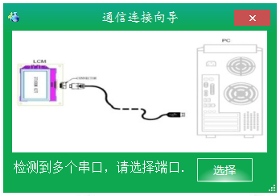
使用软件前请插入采集器设备。如果没有插入，请插入后，点击刷新按钮。
如果没有插入设备，则没有通信端口，本通信端口是采用串口进行通信。
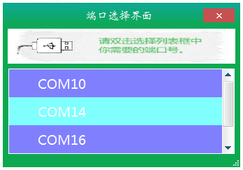
程序正常运行后，首次提醒用户是否设置计算机时间，以便用正确时间来校准无线数据接收器的系统时间。若果不去设置会以当前计算机时间来校准。
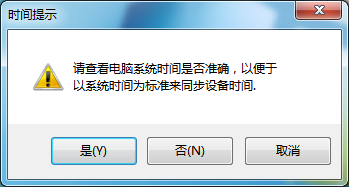
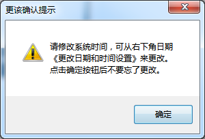
通信设置：
如果需要关闭或者打开通信，请点击主程序的左上角上面图标，弹出关闭界面或打开界面。
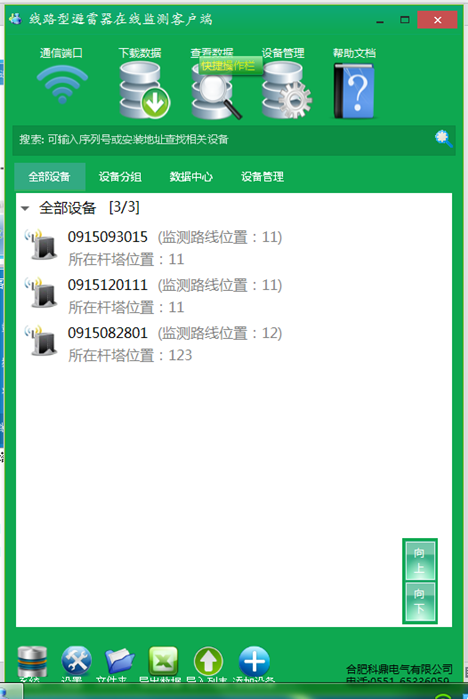
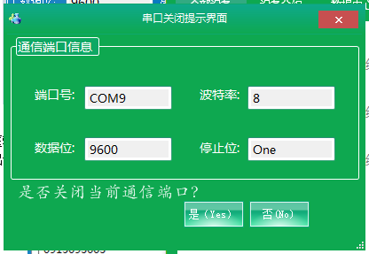
搜索框输入设备序列或者安装的位置：可以在搜所框输入设备序列号或者安装地址，自动弹出该设备/杆塔设备的操作界面。
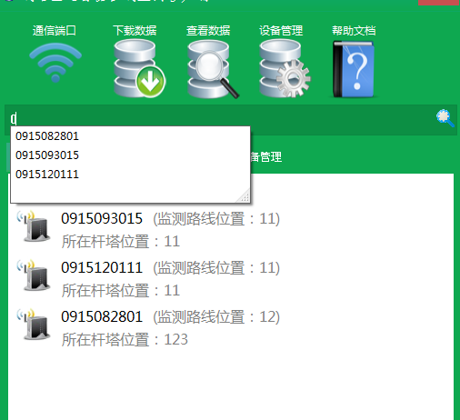
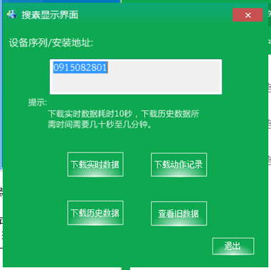
点击按钮，进行操作。
设备查询的方式：
操作主要有下载实时数据，下载历史数据，下载动作记录，查询数据
一．单台设备操作。
点击所选设备，右击显示功能菜单。
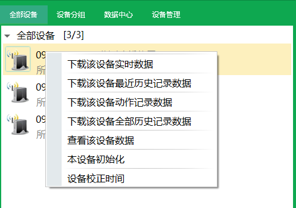
实时数据：
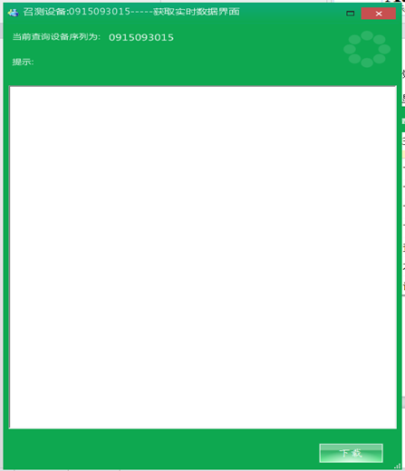
点击下载按钮，大约6秒可获得数据，多次下载获取数据失败，可能距离太远或者设备没有电了。
返回的设备信息中，如有新增设备动作，会有文字提示，你可以去下载动作记录，或者不下载。
动作记录：
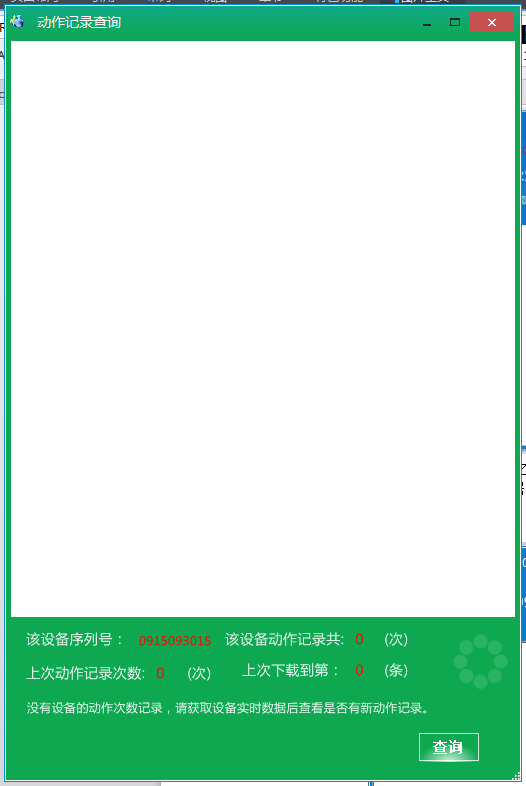
点击按钮，查询动作记录之前，确保有动作，此时查看设备动作记录是否大于0，如没有课获取实时数据，查看设备动作了没有。
历史记录：
点击下载数据后，可以获取设备存储的数据。下载一台设备的一天历史数据大约40秒，所以在多台设备历史数据下载界面中建议不要同时一起下很多设备的历史数据。
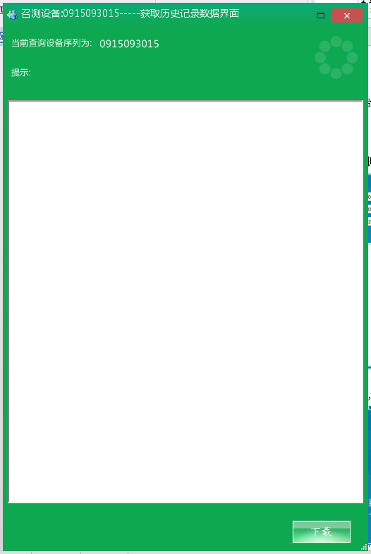
查询界面：
包含该设备的实时数据，历史数据，动作记录。
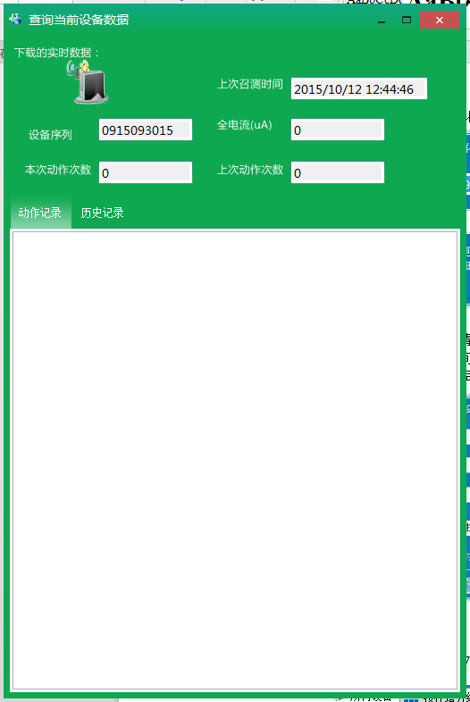
初始化：
出厂后设备安装结束，请初始化下设备，清楚设备存储的旧数据。
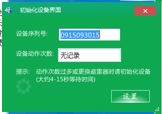
同步设备时间：
长时间运行后请（一年后），请校准设备的时间，如要立即同步，点击立即同步时间按钮，否则点击获取设备时间按钮，该操作在获取设备时间后来自动比较设备时间是否准确，不准确提示用户同步时间。
二．多台设备操作。
点击倒三角型，右击弹出菜单。
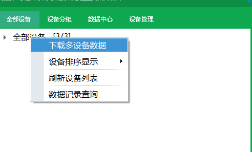
可以刷新设备和排序。也可以查询和下载数据。
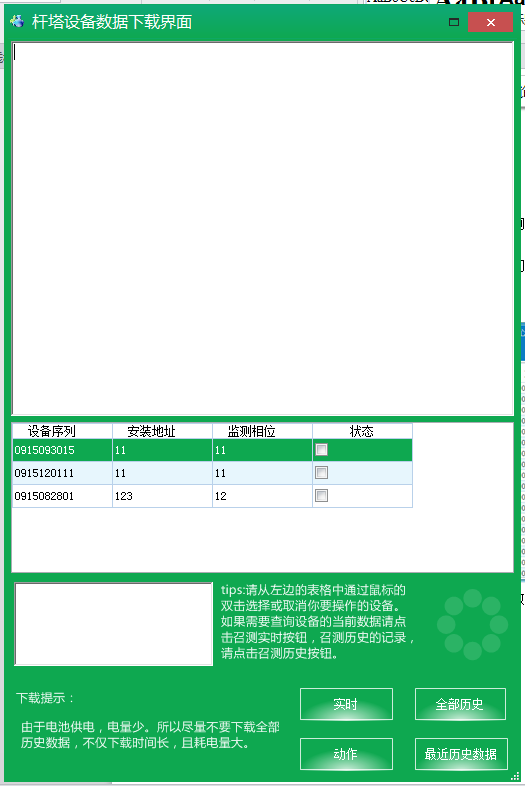
本界面下不建议你下载多台设备的历史数据。如下载，请耐心等待，下载耗时很久。
查询设备:
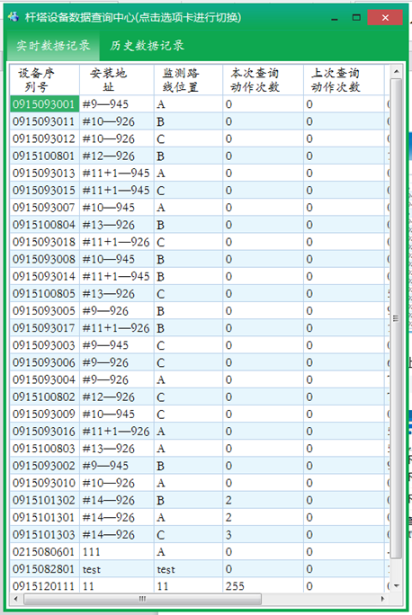
点击历史数据记录，切换到动作数据记录和历史数据记录
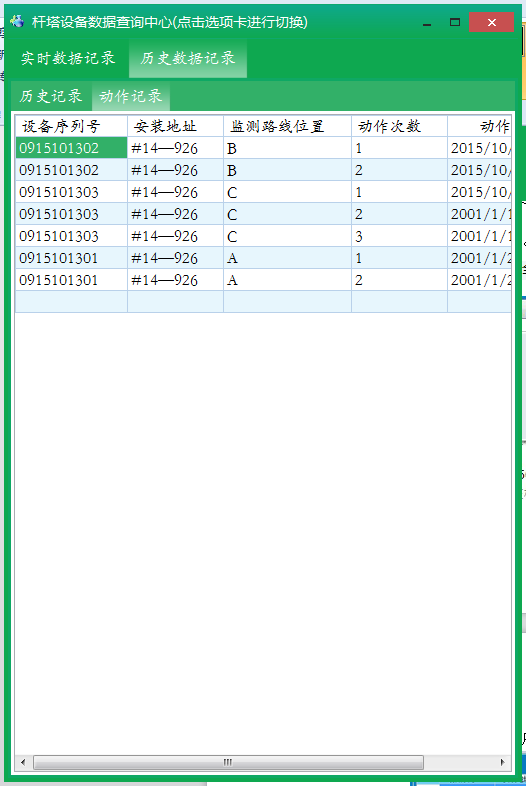
三．下载一个杆塔上的一组设备数据.
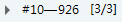鼠标右击弹出菜单。
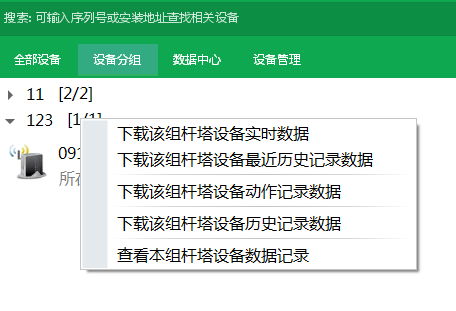
实时数据：
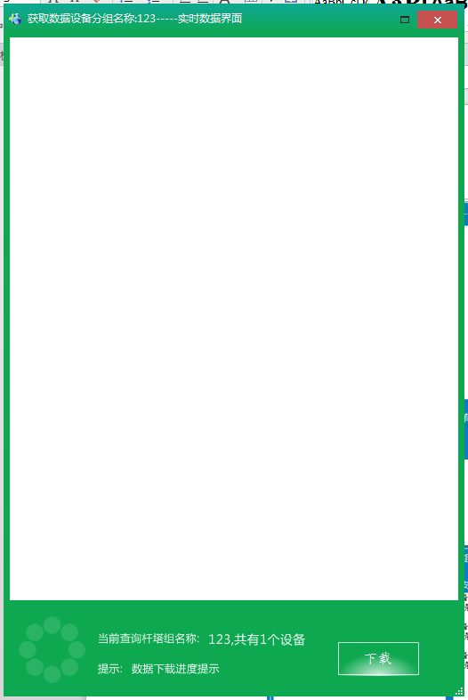
动作记录：
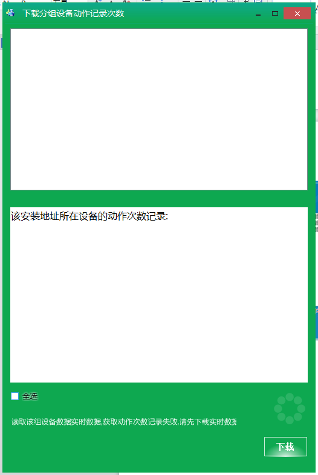
历史数据：
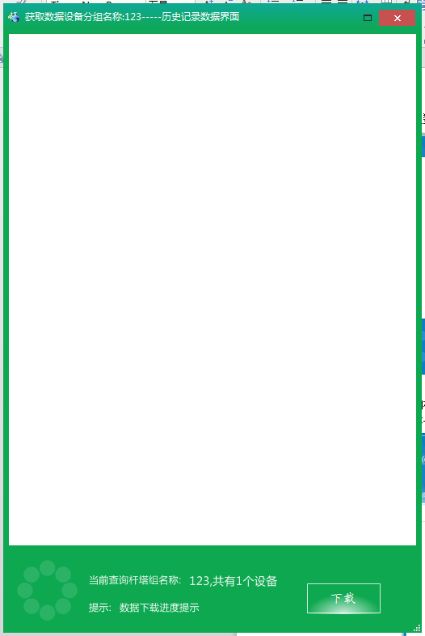
查询杆塔数据：
杆塔一组设备的实时数据，动作数据，历史数据。
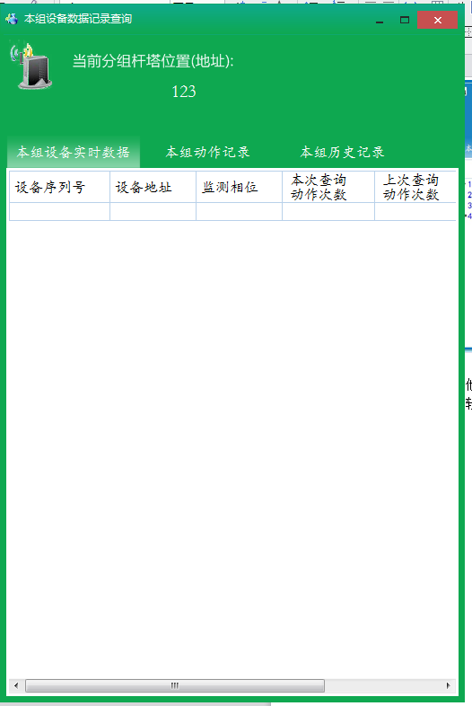
其他操作说明：
在软件的下方还有一些其他功能按钮。
点击Excle数据，可以导出设备的数据位excle文件。
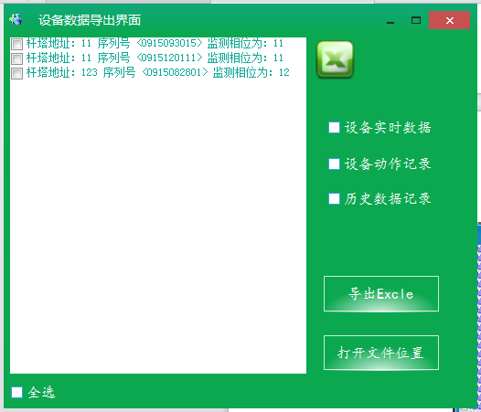
点击导入设备清单，即可将填有设备信息的xls文件导入到软件中。
软甲首次运行，如果没有设备，请导入设备清单。
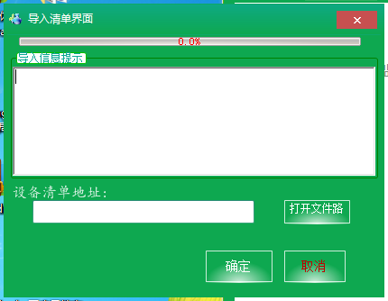
点击设备管理器，可以添加设备和删除设备。
右击弹出操作菜单。
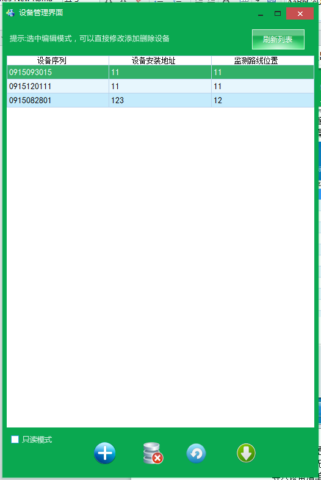
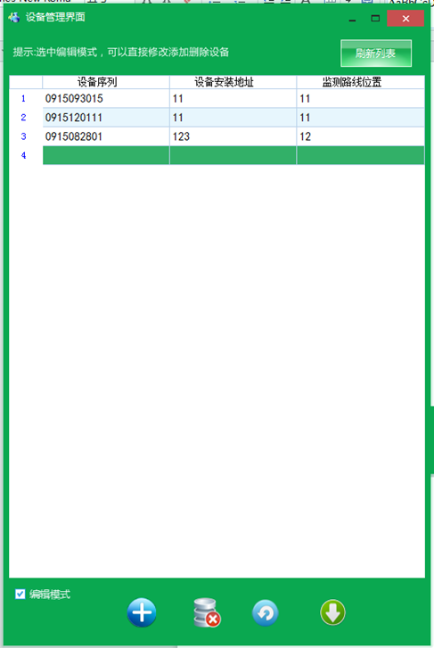
通信协议设置：默认支持全电流，不需要更改，除非设备为无线计数器。本软件默认使用无线监测仪。
导入设备清单，可以导出所有设备，导出文件为xls格式。你也可以讲新增的设备添加到xls文件中，在导入进软件中。
修改备注：
通过上面俩个按钮可以控制滚动条滚动。
通过选中某个设备，然后点击下载数据按钮，可以快捷下载实时数据。点击查看数据，可以查看所有设备数据，点击设备管理可以对设备操作。
当勾选框选中情况下，处于编辑模式，此时可以添加，删除设备，可以通过按钮添加设备，也可以对在表格中直接添加，但必须填写完整，否则没有效果。
如下：
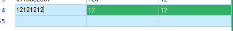
刷新列表可以对当前表格数据刷新。除序列号必须10位数字外，安装位置和监测路线位置（相位）可以随便填写。
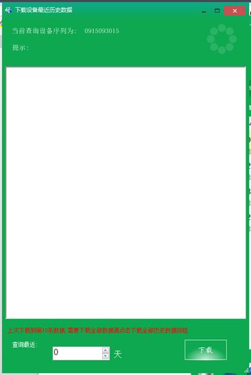
由于下载全部数据耗时长，且耗电，这里可以选择下载离当前最近几天的数据，这样设备负担小，且耗电量少。
注意：
注1：导出的数据存放在桌面文件夹里面“导出数据文件夹”，“设备清单”使用来存放导入的设备清单。
注2：软件的“实时”，“动作”，“历史”,分别表示设备当前的数据情况，设备产生的动作次数，设备存储的各种历史数据。
注3：本软件导出的数据格式为.xls格式，使用excle或wps即可查看。
注4：由于设备是电池供电，所以设备通信相应需要大约6秒中，因此下载一台设备实时数据大约6秒，动作记录需要的时间为动作的次数*6秒，历史数据需要时间：下载保存一天的数据需要40秒，所以建议非需要情况下，不要下载全部历史数据，否则对设备来说很耗电，其次下载等待时间很长，27台设备存满数据后一次性全部下载大约需要65个小时。
注5：新增下载设备最近历史数据功能，用户可以下载离当前时间最近的某些天的数据。
注6：由于设备历史数据采集过程中，用户可能需要下载当前日期的最近的历史数据，可点击下载最近的历史数据按钮，这样用户可以选择获取最近多少天的历史数据。